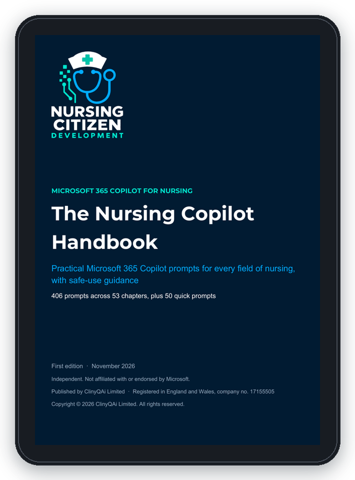
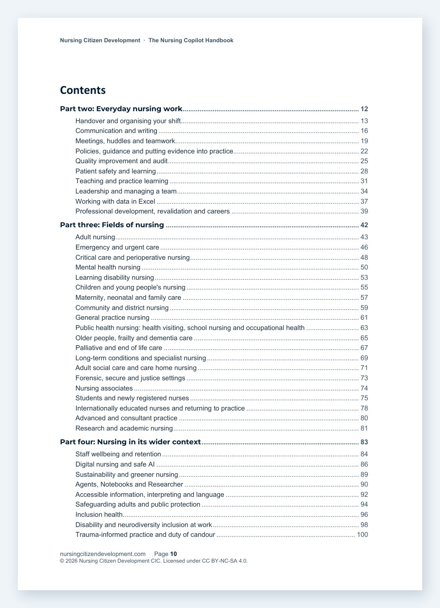
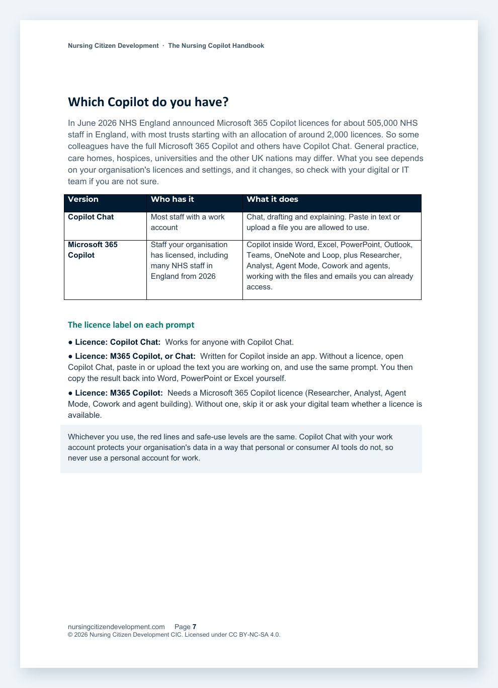

Microsoft 365 Copilot for nursing
The Nursing Copilot Handbook
406 practical prompts for every field of nursing, with safe-use guidance, built on the nursing process and mapped to the NMC Code. Written by a nurse, for nurses, nursing associates, students and support workers.
- 406 prompts in 53 chapters
- 50 quick prompts
- Free update for the new NMC Code
- Safe-use level on every prompt
- Free PDF download

Why this handbook
Copilot is now on NHS desktops. This handbook shows nurses how to use it safely.
Starts from nursing work
Handover, teaching, revalidation, safeguarding preparation, audit, leadership: every prompt begins with a real task, not a tech feature.
Safe-use guidance on every prompt
Every prompt carries a safe-use level and the red lines: no identifiable information, no clinical decisions, no made-up references.
Works with your licence
Each prompt shows whether it works in Copilot Chat or needs a full Microsoft 365 Copilot licence, with a workaround where there is one.
What's inside
Five parts, 53 chapters, one way of working
Every prompt follows the NCD Nursing Prompt Cycle: Assess, Plan, Implement, Evaluate, the nursing process you already use, linked to the four themes of the NMC Code.
- Everyday nursing work: handover, communication, meetings, policies, quality improvement, safety, teaching, leadership, Excel and revalidation
- Every field of nursing: adult, mental health, learning disability, children's, community, general practice, public health, palliative care, care homes, forensic and more
- Nursing in its wider context: digital nursing, accessible information, safeguarding, inclusion health, trauma-informed practice and the four UK nations
- New for 2026: checking Copilot's work, Agent Mode and Cowork, AI scribes, and building a simple agent safely
- Anti-racism and workforce standards: WRES, WDES, the NHS Staff Standards, sexual safety, violence prevention and race equity in care
- Plus: a glossary of AI terms, worked examples, a printable safe-use card and a prompt builder
Look inside
Real pages from the handbook





Free from Nursing Citizen Development
Download the handbook free
The Nursing Copilot Handbook is now a free resource from Nursing Citizen Development CIC, a not-for-profit community interest company. The download includes the PDF, a searchable prompt spreadsheet, a CPD log template for revalidation and the printable safe-use card.
If the download is blocked on a work network, use "Open in Google Drive" or try a personal device.
Use it, share it, adapt it. Don't sell it.
The handbook is licensed under Creative Commons Attribution-NonCommercial-ShareAlike 4.0 (CC BY-NC-SA 4.0). You can:
- share it with colleagues, students and your whole organisation, including on your intranet, SharePoint or learning platform;
- adapt the prompts for your service or teaching;
as long as you credit "The Nursing Copilot Handbook by Nursing Citizen Development CIC, CC BY-NC-SA 4.0", don't sell it or put it in a paid product or course, and share any adapted version under the same licence. The Nursing Citizen Development name and logo are not covered by the licence. See the licence and terms.
Want a quick look first? Read a sample chapter.
"Checking Copilot's work", the licence guide and the safe-use card, free to download and share.
About the author
Lincoln Gombedza
Lincoln is a Registered Learning Disability Nurse and former practice educator. He is a member of the NMC Professional Strategic Advisory Group and the BMJ Future Health Committee, and co-chaired the Chief Nursing Officer's Professional Strategy Working Group on Digital and Technology.
Through Nursing Citizen Development, his work focuses on digital literacy, safe citizen development and co-design, so that the nurses closest to practice can shape, question and build the technology they use.
Independent
Published free by Nursing Citizen Development CIC. Not affiliated with or endorsed by Microsoft, the NMC or NHS England.
Questions
Common questions
Do I need a paid Copilot licence?
No. Many prompts work in Copilot Chat, which most NHS staff can use with a work account. Each prompt is labelled, and where it is written for Copilot inside Word, Excel or PowerPoint, the handbook shows how to use it in Copilot Chat instead.
Can I use it with patient information?
No prompt asks you to enter information that identifies anyone. The handbook is for writing, organising, learning and improvement, not clinical decisions. Always follow your organisation's information governance rules and use only the Copilot it has approved.
Does it work outside England?
Yes. The prompts work wherever Microsoft 365 Copilot is used, and there is a chapter on working across the four UK nations. Some standards referred to, such as WRES and WDES, are specific to the NHS in England.
Can I share it with my team?
Yes. Share it with anyone, put it on your intranet or learning platform, or print it, as long as you credit it and don't sell it.
Can our organisation use it in training?
Yes. NHS organisations, universities, care providers and charities can use and adapt it in their own free training. Selling it, or including it in a paid course or product, is not allowed. If you're unsure whether your use counts as commercial, email us.
Is the PDF accessible?
Yes. It has headings, bookmarks and accessible colours. If you need another format, email us.
Will it be updated?
Yes. The NMC is consulting on a new Code, expected to be published in 2027. When it is, an updated edition will be published here free. Sources in this edition were checked in November 2026.
Should I wait for the new Code?
No need. The prompts work with Copilot today, and the new-Code edition will be free too.